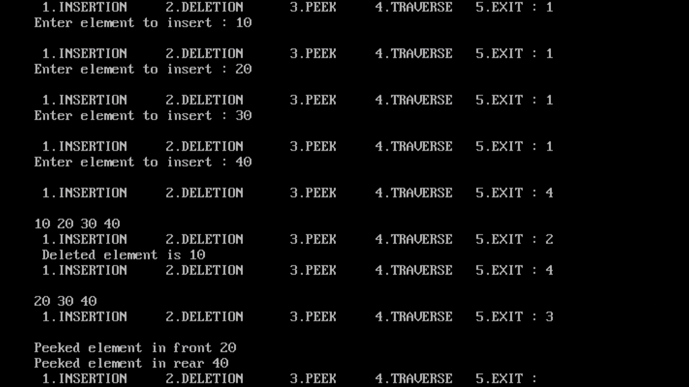

Menu driven program of
linear queue
with all operations
# include <stdio.h> # include <conio.h> # define max 10 int q[max]; int f=0,r=-1; void create() { if(r>max-1) { printf("Queue is full "); } else { r++; printf("Enter element to insert : "); scanf("%d",&q[r]); } } void del() { int x; if(f>r) { printf("\nQueue is empty "); } else if(f<r) { x=q[f]; f++; printf(" Deleted element is %d ",x); } else { x=q[f]; f=0; r=-1; printf("\n Deleted element is %d ",x); } } void peek() { printf("\nPeeked element in front %d ",q[f]); printf("\nPeeked element in rear %d ",q[r]); } void display() { int i; printf("\n"); for(i=f; i<=r; i++) { printf("%d ",q[i]); } } void main() { int ch; clrscr(); while(1) { printf("\n 1.INSERTION 2.DELETION 3.PEEK 4.TRAVERSE 5.EXIT : "); scanf("%d",&ch); switch(ch) { case 1: create(); break; case 2: del(); break; case 3: peek(); break; case 4: display(); break; case 5: exit(1); } } getch(); }
Output
Code
